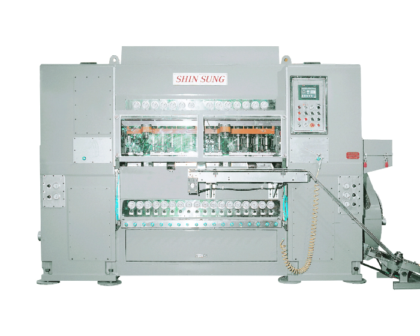
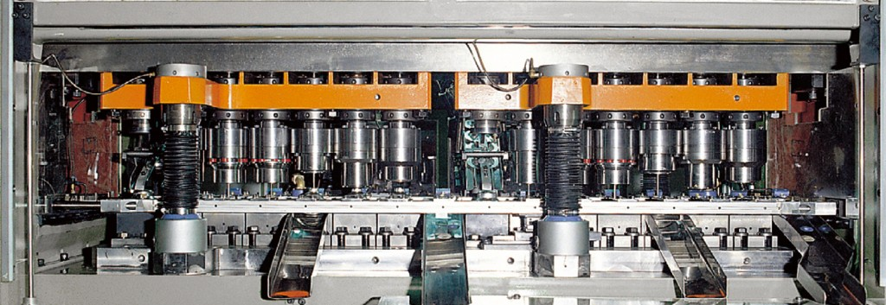

PRODUCT · AEROSOL CONE & DOME
에어로졸 콘 & 돔
다공정 연속 성형 트랜스퍼 프레스와 실링제 자동 도포·건조 설비로 에어로졸 콘·돔 생산 공정을 구성합니다.


LAYOUT
정면도·측면도 기준 설비 배치 및 치수 레이아웃입니다.

SPECIFICATIONS
FEATURES
DETAIL VIEW
다공정 트랜스퍼 스테이션과 더블 다이셋 금형 구성을 확인할 수 있습니다.

PROCESS & SPEC